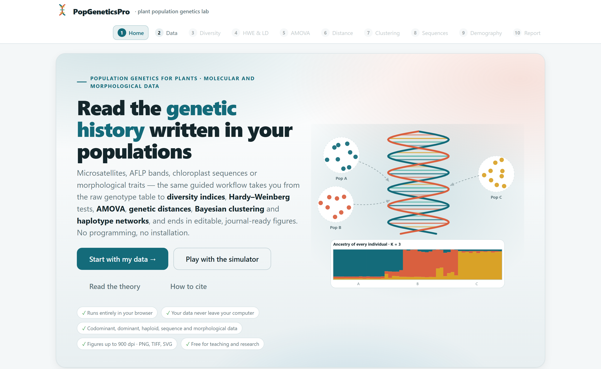
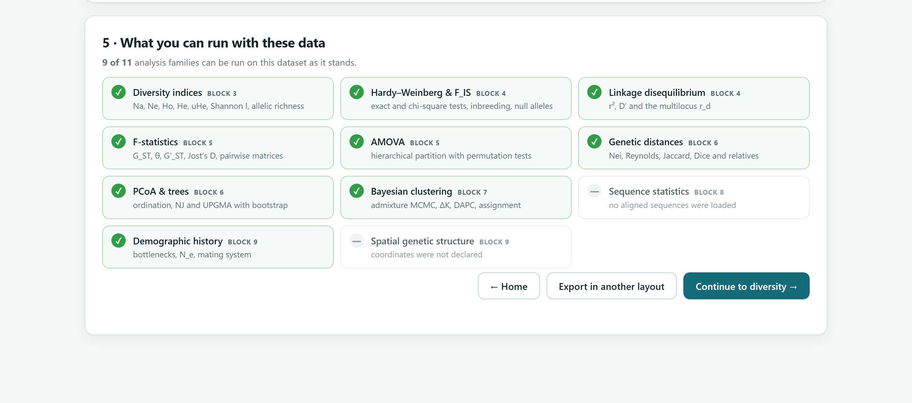
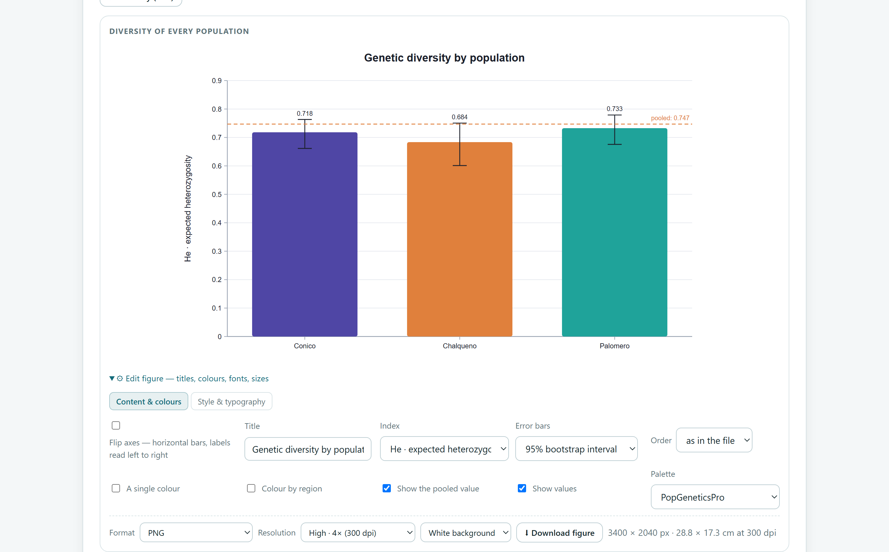
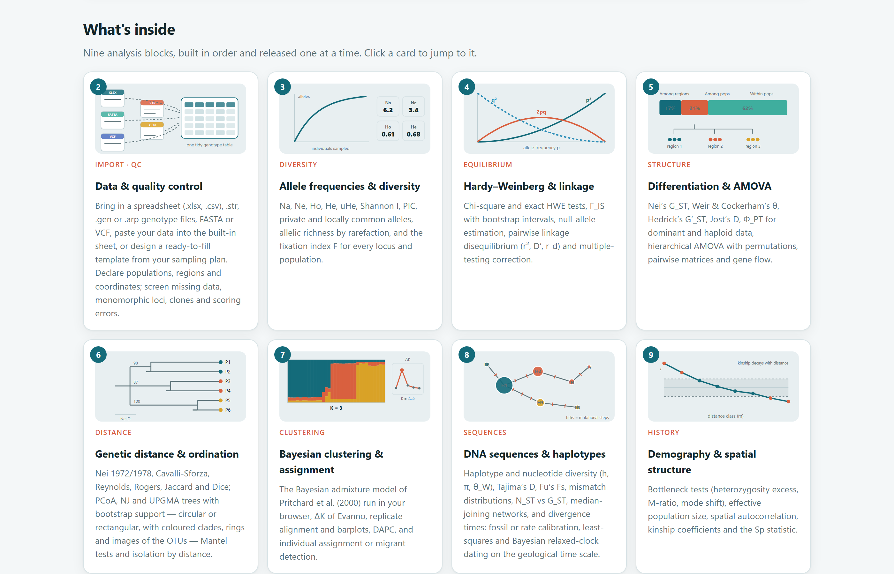

Cuando el programa tenga identificador de objeto digital (DOI), aparecerá en la sección How to cite de la portada de la app y en el informe automático del Bloque 10; úsalo en tus citas.
PopGeneticsPro funciona por completo dentro de tu navegador. Los archivos que abres se leen en tu computadora y nunca se envían a ningún servidor. Puedes analizar datos inéditos o sujetos a acuerdos de confidencialidad sin riesgo de que salgan de tu equipo.
Las ilustraciones, diagramas y capturas de pantalla de este manual son originales y se generaron con el propio programa o con código escrito para el manual. Los conjuntos de datos de ejemplo se describen en la sección 1.7; el de los cinco géneros es sintético y sus nombres de taxones y fósiles son inventados.
El manual sigue el mismo orden que la app: diez bloques numerados que se recorren de izquierda a derecha en la barra superior. Cada capítulo explica un bloque, empieza con un poco de teoría fácil de digerir, describe los índices que calcula y termina con un ejemplo paso a paso usando los datos que ya vienen dentro del programa.
El color del bloque aparece en la apertura de su capítulo, en los números de sección, en los recuadros de teoría y en el índice. Así sabes de un vistazo en qué parte de la app estás.
| Bloque | Nombre en la app | Qué hace |
|---|---|---|
| 1 | Home | Portada, teoría esencial, simulador y cómo citar |
| 2 | Data | Carga de archivos, hoja de datos, plantillas y control de calidad |
| 3 | Diversity | Frecuencias alélicas e índices de diversidad |
| 4 | HWE & LD | Equilibrio de Hardy–Weinberg, endogamia, alelos nulos y ligamiento |
| 5 | AMOVA | Diferenciación entre poblaciones y análisis de varianza molecular |
| 6 | Distance | Distancias genéticas, PCoA, árboles y aislamiento por distancia |
| 7 | Clustering | Agrupamiento bayesiano, DAPC y asignación de individuos |
| 8 | Sequences | Secuencias de ADN, redes de haplotipos y fechado molecular |
| 9 | Demography | Cuellos de botella, tamaño efectivo, estructura espacial y PST |
| 10 | Report | Figuras para publicar e informe automático |
Aclaraciones y consejos prácticos que ahorran tiempo.
Lo que puede cambiar tus conclusiones si se pasa por alto.
La idea detrás de un análisis, sin fórmulas innecesarias.
Un caso real con los datos incluidos en el programa.
| Si el valor cae en este intervalo… | entonces esta es la lectura recomendada. |
Son guías para interpretar, no leyes: el contexto biológico de tu especie siempre manda.
| Así se escribe | Significa |
|---|---|
| Compute diversity | Un botón, casilla o menú de la app, con su texto en inglés tal como aparece en pantalla. |
| Edit figure›Style & typography | Una ruta: abre el primer elemento y luego el segundo. |
maize_ssr_populations.csv | Un nombre de archivo, columna o valor que se escribe tal cual. |
| He, FST, ΦPT | Índices y parámetros; su significado se explica la primera vez que aparecen. |
| ● ◐ — | Disponible · disponible en parte o con condiciones · no aplica. |
Qué es el programa, qué preguntas responde, qué datos acepta y cómo se recorre de principio a fin. Incluye las ideas básicas de genética de poblaciones que necesitas para aprovechar el resto del manual.
PopGeneticsPro es una plataforma para analizar la variación genética de poblaciones de plantas del campo al artículo: recibe la tabla que sale del laboratorio, la revisa, calcula los análisis clásicos y modernos de la genética de poblaciones y entrega figuras e informes listos para publicar.
Todo ocurre dentro del navegador de internet. No hay que instalar nada, no se necesita saber programar y los datos no salen de la computadora. Los mismos pasos sirven para microsatélites, bandas AFLP o ISSR, secuencias de cloroplasto y caracteres morfológicos, de modo que puedes comparar marcadores distintos del mismo material con un solo flujo de trabajo.

1 2 3 4 5 6index.html. No requiere permisos de administrador ni conexión a internet.| Etapa | Lo que obtienes | Bloque |
|---|---|---|
| Entrada de datos | Lectura de hojas de cálculo (.xlsx, .csv), archivos de genotipos (.str, .gen, .arp), FASTA y VCF; hoja de datos para pegar; plantillas listas para llenar. | 2 |
| Control de calidad | Datos faltantes, loci monomórficos, clones, errores de codificación y tamaño de muestra por población. | 2 |
| Diversidad | Na, Ne, Ho, He, uHe, índice de Shannon, PIC, alelos privados, riqueza alélica y F. | 3 |
| Equilibrio | Pruebas de Hardy–Weinberg, FIS con intervalos, alelos nulos y desequilibrio de ligamiento. | 4 |
| Estructura | GST, θ, G′ST, D de Jost, ΦPT, AMOVA jerárquico, matrices por pares y flujo génico. | 5 |
| Relaciones | Distancias genéticas, PCoA, árboles NJ y UPGMA con bootstrap, pruebas de Mantel y aislamiento por distancia. | 6 |
| Agrupamiento | Modelo bayesiano de mezcla, ΔK, DAPC, asignación de individuos y detección de migrantes. | 7 |
| Secuencias | Hd, π, θW, D de Tajima, Fs de Fu, mismatch, redes de haplotipos y fechado con fósiles o tasas. | 8 |
| Historia | Cuellos de botella, tamaño efectivo, autocorrelación espacial, estadístico Sp, apareamiento y PST. | 9 |
| Publicación | Figuras editables hasta 900 dpi (PNG, TIFF, SVG, JPG, WEBP), informe completo y paquete ZIP con tablas y métodos. | 10 |
Para quien estudia la diversidad genética de plantas silvestres o cultivadas y quiere resultados sólidos sin pelear con formatos ni líneas de comando: estudiantes de licenciatura y posgrado que se inician en la genética de poblaciones, investigadores en recursos fitogenéticos y conservación, mejoradores que caracterizan germoplasma, y docentes que necesitan mostrar en clase cómo actúan la deriva, el flujo génico o la selección. Cada resultado viene acompañado de un párrafo que lo interpreta en lenguaje llano, lo que convierte a la app también en una herramienta de enseñanza.
Un buen análisis empieza con una pregunta biológica. La tabla siguiente traduce las preguntas más frecuentes de un estudio de genética de poblaciones al análisis que las responde y al bloque donde se encuentra.
| Pregunta | Análisis que la responde | Bloque |
|---|---|---|
| ¿Mis datos están limpios y bien codificados? | Resumen de faltantes, loci monomórficos, clones y códigos inconsistentes | 2 |
| ¿Cuánta variación genética tiene cada población? | He, riqueza alélica rarefaccionada, alelos privados | 3 |
| ¿Hay endogamia o autofecundación? | FIS por locus y población; comparación Ho contra He | 4 |
| ¿Algún locus tiene alelos nulos? | Estimación de frecuencia de alelos nulos; FIS alto en un solo locus | 4 |
| ¿Las poblaciones son genéticamente distintas? | FST, G′ST, D de Jost, ΦPT con pruebas de permutación | 5 |
| ¿Qué parte de la variación está entre regiones, entre poblaciones y dentro de ellas? | AMOVA jerárquico | 5 |
| ¿Qué materiales se parecen más entre sí? | Distancias genéticas, PCoA, árboles con bootstrap | 6 |
| ¿Las poblaciones más lejanas son más distintas? | Prueba de Mantel y aislamiento por distancia | 6 |
| ¿Cuántos grupos genéticos hay, sin suponerlos de antemano? | Agrupamiento bayesiano con ΔK; DAPC | 7 |
| ¿Hay individuos que vienen de otra población? | Pruebas de asignación y detección de migrantes | 7 |
| ¿Cómo se relacionan los haplotipos y dónde están? | Red de haplotipos por median-joining; NST contra GST | 8 |
| ¿Cuándo divergieron los linajes? | Fechado molecular con fósiles o tasa de sustitución | 8 |
| ¿La población pasó por un cuello de botella o se expandió? | Exceso de heterocigosis, razón M, cambio de moda; D de Tajima, mismatch | 9 8 |
| ¿Cuántos reproductores contribuyen realmente a la siguiente generación? | Tamaño efectivo de población (Ne) | 9 |
| ¿Los vecinos cercanos están emparentados? | Autocorrelación espacial, coeficientes de parentesco y estadístico Sp | 9 |
| ¿Los caracteres morfológicos divergen más de lo esperado por deriva? | PST comparado con FST neutral | 9 |
No necesitas un curso previo para usar la app, pero estas cinco ideas aparecen en todos los capítulos. Léelas una vez y regresa a ellas cuando lo necesites.
Un locus (plural loci) es un lugar concreto del genoma: un microsatélite, una banda AFLP o un fragmento de ADN de cloroplasto. Las variantes que existen en ese lugar son los alelos. En una planta diploide cada locus tiene dos alelos; si son iguales el individuo es homocigoto (152/152) y si son distintos, heterocigoto (152/158).
La unidad de la genética de poblaciones no es el individuo, sino la frecuencia de cada alelo en la población. Si en 25 plantas diploides (50 copias del gen) el alelo 152 aparece 35 veces, su frecuencia es p = 35/50 = 0.70. Casi todos los índices del programa se calculan a partir de estas frecuencias.
Si una población es grande, se aparea al azar y no recibe migrantes, ni mutación, ni selección, las frecuencias de los genotipos se pueden predecir de las frecuencias alélicas: con dos alelos de frecuencias p y q, se esperan p² homocigotos de un tipo, 2pq heterocigotos y q² homocigotos del otro. Las desviaciones de esa línea base son información: señalan endogamia, estructura oculta o problemas técnicos.
Con p = 0.70 y q = 0.30 se esperan 49 % de homocigotos 152/152, 42 % de heterocigotos y 9 % de homocigotos 158/158. Si en el campo solo encuentras 30 % de heterocigotos, falta heterocigosis. El índice de fijación la mide:
F = 1 − Ho/He = 1 − 0.30/0.42 = 0.29
Un valor positivo indica déficit de heterocigotos (endogamia o autofecundación); un valor negativo, exceso.
Cinco procesos alejan a las poblaciones del equilibrio. Cada uno deja una huella distinta en la diversidad dentro de las poblaciones y en la diferenciación entre ellas, y reconocer esas huellas es el corazón de la interpretación.
| Fuerza | Diversidad dentro | Diferenciación entre | Cómo reconocerla en tus resultados |
|---|---|---|---|
| Deriva génica azar en poblaciones pequeñas | ↓ | ↑ | Poblaciones pequeñas con pocos alelos, pérdida de alelos raros, FST alto sin relación con la distancia. |
| Flujo génico migración de polen o semilla | ↑ | ↓ | FST bajo, individuos mezclados en el agrupamiento bayesiano, migrantes detectados. |
| Mutación | ↑ | ≈ | Alelos privados en poblaciones antiguas y estables; muy lenta a escala ecológica. |
| Selección divergente | ↓ en loci bajo selección | ↑ | Un locus o carácter con diferenciación mucho mayor que el resto; PST > FST. |
| Autofecundación y endogamia | ↓ heterocigosis | ↑ | FIS positivo y similar en todos los loci; Ho muy por debajo de He. |
Cuando una especie está dividida en poblaciones que intercambian pocos migrantes, la variación total se reparte en dos componentes: la que existe dentro de cada población y la que las separa. Los estadísticos F de Wright y el AMOVA miden ese reparto. Un FST de 0.15, por ejemplo, significa que el 15 % de la variación genética está entre poblaciones y el 85 % dentro de ellas.
La primera decisión de cualquier análisis es saber qué clase de marcador tienes, porque determina qué se puede calcular. PopGeneticsPro reconoce cinco tipos y adapta cada bloque a ellos.
| Tipo | Ejemplos | Ventaja | Limitación |
|---|---|---|---|
| Codominante | Microsatélites (SSR), SNP, isoenzimas | Se observan heterocigotos; permite todas las pruebas de equilibrio, endogamia, alelos nulos, Ne y cuellos de botella. | Posibles alelos nulos y errores de lectura del tamaño. |
| Dominante | AFLP, ISSR, RAPD | Muchos loci con poco costo y sin conocer el genoma. | No distingue heterocigotos: las frecuencias se estiman suponiendo equilibrio y no hay pruebas de Hardy–Weinberg. |
| Haploide | Códigos de haplotipos de cloroplasto o mitocondria | Herencia por un solo progenitor; ideal para rastrear la dispersión de semillas. | Un solo linaje por individuo; menos variación que los marcadores nucleares. |
| Secuencias | Alineamientos FASTA de cpDNA, ITS, genes nucleares | Informan sobre la genealogía de los haplotipos, la historia demográfica y los tiempos de divergencia. | Un alineamiento es un solo locus; requiere secuencias alineadas de igual longitud. |
| Morfológico | Caracteres de planta, flor, fruto y semilla | Refleja el fenotipo que interesa al mejorador y a la conservación; permite PST. | Está influido por el ambiente; no mide directamente la variación genética. |
Declarar mal el tipo de dato cambia los resultados. Una matriz de 0 y 1 de ISSR leída como codominante daría heterocigosis absurdas. El Bloque 2 detecta el tipo automáticamente, pero siempre te muestra lo que supuso y te permite corregirlo antes de calcular nada.
index.html | La app. Ábrela con doble clic. |
Open PopGeneticsPro.bat | Arranque opcional con servidor local. |
js/, css/ | El código del programa. |
data/ | Los archivos de ejemplo. |
vendor/ | Componentes de terceros y sus licencias. |
PopGeneticsPro completa a tu computadora, por ejemplo a Documentos. No separes index.html del resto de las carpetas.index.html. Se abrirá en tu navegador predeterminado con la portada del Bloque 1.Con doble clic todo funciona, pero algunos navegadores limitan los procesos en segundo plano cuando la página se abre como archivo local. En ese caso el agrupamiento bayesiano y el fechado corren igualmente, aunque la ventana puede quedar ocupada mientras calculan. Si trabajas con estudios grandes, usa Open PopGeneticsPro.bat: inicia un pequeño servidor en tu propia computadora (dirección http://localhost:9000) y abre la app desde ahí. Sigue sin enviarse nada a internet.
La app guarda en tu navegador las preferencias de estilo de las figuras y el contenido de la hoja de datos integrada. Si cambias de navegador o borras los datos de navegación, esas preferencias se pierden, pero tus archivos originales no se modifican nunca.
Todos los bloques de análisis comparten la misma organización, así que basta aprenderla una vez. De arriba abajo, cada bloque tiene tres partes:
| Parte | Qué contiene | Cómo aparece en pantalla |
|---|---|---|
| 1 · Ajustes | Opciones del análisis con valores predeterminados que siguen las convenciones más comunes de la literatura, y un botón para calcular. | 1 · Settings · Compute … |
| 2 · Lo que dicen los números | Tarjetas con los valores principales y párrafos que interpretan los resultados en lenguaje llano. | 2 · What the numbers say |
| 3 · Tablas y figuras | Tablas descargables y figuras editables con controles de estilo y exportación. | Edit figure · Download figure |


1 2 3 4 5 6La app está en inglés, el idioma de las revistas científicas. Esta tabla reúne los términos que verás en todos los bloques.
| En la app | En español | En la app | En español |
|---|---|---|---|
| Settings | Ajustes | Download | Descargar |
| Compute · Run | Calcular · ejecutar | Edit figure | Editar figura |
| What the numbers say | Lo que dicen los números | Content & colours | Contenido y colores |
| Population · Region | Población · región | Style & typography | Estilo y tipografía |
| Locus · Loci | Locus · loci | Palette | Paleta de colores |
| Missing data | Datos faltantes | Flip axes | Girar los ejes |
| Replicates | Réplicas | Resolution | Resolución |
| Random seed | Semilla aleatoria | Report | Informe |
| Continue to … | Continuar a… | How to cite | Cómo citar |
Los análisis que usan remuestreos, permutaciones o cadenas de Markov dependen del azar. La Random seed fija ese azar: con la misma semilla y los mismos datos obtendrás exactamente los mismos intervalos y valores P. Anota la semilla en la sección de métodos de tu artículo para que otros puedan reproducir tus resultados; el informe del Bloque 10 lo hace por ti.
El programa incluye seis conjuntos de datos listos para usar. Están incrustados en la app, así que cargan aunque no haya conexión, y cada uno está pensado para practicar un tipo de dato distinto. Los capítulos de cada bloque los usan en sus ejemplos paso a paso.
| Botón en la app | Tipo | Contenido | Bloques para practicar |
|---|---|---|---|
| Maize landraces · ISSR | Dominante | 31 bandas ISSR en 15 razas mexicanas de maíz, una muestra compuesta por raza. Los loci están en filas: la app tiene que darse cuenta y transponer la tabla. | 2 6 10 |
| Maize populations · SSR | Codominante | 8 microsatélites en 3 poblaciones de maíz (Cónico, Chalqueño y Palomero) con 25 plantas cada una; dos columnas por locus. | 2 3 4 5 6 7 9 |
| Agave · AFLP | Dominante | 60 bandas AFLP en 4 poblaciones de agave con 20 plantas cada una y coordenadas geográficas. | 2 3 4 5 6 7 9 |
| Pine · chloroplast DNA | Secuencias | 48 secuencias alineadas de ADN de cloroplasto (480 pb) de pino en 4 poblaciones. | 2 5 6 8 |
| Maize · morphology | Morfológico | 9 caracteres medidos en las mismas plantas del ejemplo de microsatélites. | 2 3 6 9 |
| Five genera · dating with fossils | Secuencias | Sintético: 16 especies de cinco géneros inventados y un grupo externo, 1600 sitios simulados sobre un árbol con edades conocidas y fósiles ficticios. | 2 6 8 |

La matriz ISSR de razas de maíz proviene de un estudio real y se publica con autorización de su autor. Los conjuntos de microsatélites, AFLP, cloroplasto y morfología son simulaciones realistas creadas para enseñar, y el de los cinco géneros es completamente sintético, con edades verdaderas conocidas para comprobar el fechado.
Los bloques están ordenados como se hace un estudio: primero se asegura la calidad de los datos, luego se describe la diversidad, se revisan los supuestos, se mide la estructura y, al final, se interpreta la historia. Cada tipo de dato recorre un camino distinto por esa secuencia, como líneas de metro que se detienen solo en algunas estaciones.
| Tipo | 3 | 4 | 5 | 6 | 7 | 8 | 9 | Condiciones |
|---|---|---|---|---|---|---|---|---|
| Codominante | ● | ● | ● | ● | ● | — | ● | Bloques 4 y 5 requieren individuos repetidos dentro de las poblaciones; el 9, al menos 10 individuos por población o coordenadas. |
| Dominante | ● | ◐ | ● | ● | ● | — | ◐ | Sin pruebas de Hardy–Weinberg (solo ligamiento); en el 9 solo estructura espacial, si hay coordenadas. |
| Haploide | ● | ◐ | ● | ● | ● | — | ◐ | Igual que los dominantes; el agrupamiento pide al menos tres loci polimórficos. |
| Secuencias | ◐ | — | ● | ● | — | ● | ◐ | Un alineamiento es un solo locus: sin ligamiento ni agrupamiento bayesiano. El fechado requiere al menos tres secuencias. |
| Morfológico | ● | — | — | ● | — | — | ◐ | Diversidad fenotípica por carácter; en el 9, PST para cada carácter cuantitativo. |
| Tamaño por población | Lectura | Qué hacer |
|---|---|---|
| 25 a 30 o más | Adecuado | Suficiente para estimar bien las frecuencias alélicas con microsatélites (Hale y colaboradores, 2012). Todos los análisis son confiables. |
| 10 a 24 | Aceptable con cautela | Compara la diversidad con la riqueza alélica rarefaccionada, no con el número bruto de alelos, y reporta intervalos de confianza. |
| 5 a 9 | Limitado | Los alelos raros se pierden y los FIS son inestables. Úsalo para describir, no para comparar poblaciones con precisión. |
| Menos de 5 | Insuficiente | La app lo marca en el control de calidad. Considera unir poblaciones vecinas o limitarte a distancias y ordenación. |
Con marcadores dominantes conviene un número mayor de plantas y de bandas polimórficas, porque cada banda aporta menos información que un microsatélite.
Aunque puedes saltar entre bloques, revisa el Bloque 4 antes de interpretar el 5 y el 7. Un locus con alelos nulos o una población con fuerte endogamia distorsiona FST y el agrupamiento bayesiano. El Bloque 5 permite excluir los loci sospechosos que el Bloque 4 detecta.
Casi todos los bloques reportan valores P e intervalos de confianza. Entenderlos bien evita las dos equivocaciones más comunes: creer que un resultado no significativo prueba que no hay efecto y creer que uno significativo es necesariamente importante.
Es la probabilidad de observar un resultado tan extremo como el tuyo si en realidad no hubiera efecto. Un P = 0.003 en una prueba de Hardy–Weinberg dice que, si la población estuviera en equilibrio, un déficit de heterocigotos así ocurriría 3 veces de cada 1000 por azar.
Es el rango de valores compatibles con tus datos. Si el intervalo al 95 % de FIS va de 0.08 a 0.21, la endogamia es real y moderada. Si va de −0.05 a 0.30, los datos no distinguen entre ausencia de endogamia y endogamia fuerte.
| Valor P | Evidencia contra la hipótesis nula | Cómo redactarlo |
|---|---|---|
| P < 0.001 | Muy fuerte | “La desviación es altamente significativa”. |
| 0.001 ≤ P < 0.01 | Fuerte | “La desviación es significativa”. |
| 0.01 ≤ P < 0.05 | Moderada | “Hay evidencia de desviación”; confirma con otros loci o poblaciones. |
| P ≥ 0.05 | Insuficiente | “No se detectó desviación”. No afirmes que la población está en equilibrio: quizá faltó poder estadístico. |
Reporta siempre el valor exacto de P y el tamaño del efecto (por ejemplo, FIS con su intervalo), no solo si es significativo.
Con muchos datos, diferencias diminutas resultan significativas. Un FST de 0.01 puede tener P < 0.001 con cientos de plantas y, sin embargo, indicar poblaciones que intercambian migrantes con frecuencia. Pregúntate siempre si la magnitud importa para tu especie y tu objetivo, no solo si el valor P es pequeño.
Con estas bases estás listo para recorrer los bloques. El siguiente capítulo presenta la portada de la app, su teoría integrada y el simulador, una forma rápida de ver en movimiento las fuerzas descritas en la sección 1.3.